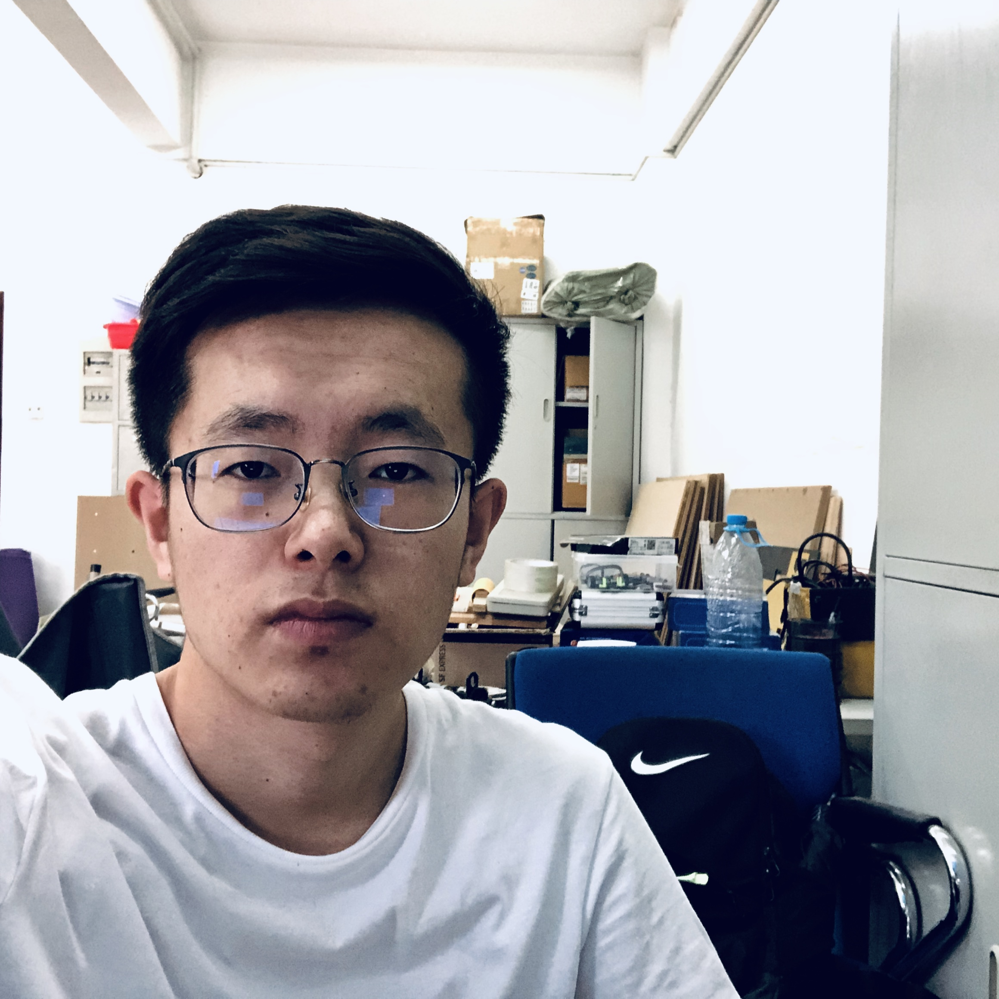
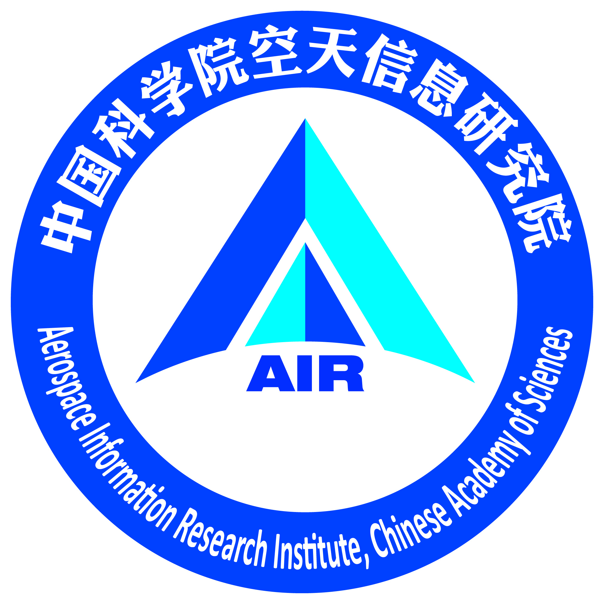

Jixiang Wu 吴吉祥 |
|
|
Email: wujixiang19@mails.ucas.ac.cn Github | ResearchGateI am a Ph.D. Candidate at University of Chinese Academy of Science (UCAS), supervised by Prof. Bin Lei and A.P. Zongxu Pan. I received my B.E. degree from EIC, Huazhong University of science and Technology(HUST). My research interests include object detection, remote sensing, SAR, etc. |
 |
|
Aerospace Information Research Institute, Chinese Academy of Science, AIRCAS
|
 |
|
University of Chinese Academy of Science, UCAS
|
|
|
Huazhong University of Science and Technology, HUST
|
Jun. 2019, Outstanding Graduate in HUST
Oct. 2018, National Scholarship for Undergraduates
Oct. 2017, National Inspirational Scholarship in HUST
I participated in RoboMaster Robotics Competition in 2018 and 2019.
I pasticipated in Hubei Province Undergraduate Electronics Design Contest in 2018.
I participated in National Undergraduate Electronics Design Contest (NUEDC) in 2017.
I served as the captin of the Red Cap in 2016. This is a voluntary service organization in EIC, HUST.
Aug. 10th. 2020, My personal page was born.
Jun. 2019, I finished my undergraduate studies.